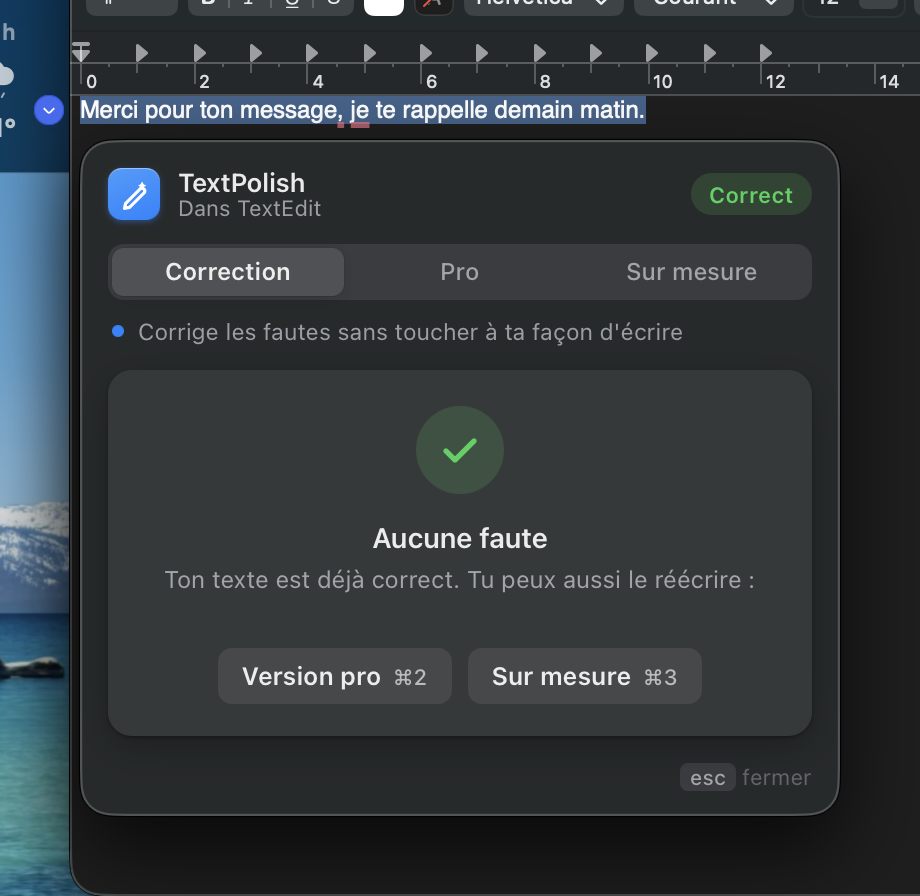

What: a Mac tool that fixes the text you select, with an AI model running on your Mac. I designed both sides: the interface (a popup that adapts to the text, where each fix is accepted or ignored) and the mechanism behind it (a model chosen by benchmark, safety rules, a grammar checker).
Key number: on 174 sentences it had never seen, 95 % come out as expected by default; fixes it isn't sure about wait for a click, so a fix that changes the meaning is rare (1 in 802 test sentences).
What it shows: a personal learning project in product design and engineering: 17 models benchmarked, test sets frozen before each change, every failure classified as grave, minor or missed.
Why I built it
To fix a message I always did the same thing: copy the text, open an online checker, paste it, copy the result back, return to the app. Five steps for a comma, and my text went through someone else's servers.
I wanted three things: never leave the app, never send anything online, and have a correction ready before I even wonder which setting to pick.
It is also a learning project: I wanted to learn how to build an AI product end to end, and how to know whether it works. It isn't distributed, so the evidence on this page comes from the real app on my Mac and from 802 test sentences, not from users.
It is built for the Mac first: the popup, the menu bar icon and every test on this page are macOS. A Windows version exists with a simpler window; it hasn't been tested since the redesign.
The flow
With every version I tried to remove one decision from the user.
- Select, then ⌥⌘G. It works in Notes, Mail, Slack, TextEdit. Whatever I had copied before is put back on the clipboard at the end.
- The window reads the text. It opens right under the selection, and the text shimmers while it is read.
- Correction starts on its own. No mode to pick: by default the tool fixes mistakes.
- I decide fix by fix. ↵ to accept, ⇥ to ignore, ⌘↵ to accept all.
- It's pasted. Only the accepted fixes replace my selection, and the window goes away.
Three modes, three colors
The default mode, Correction, only corrects. That's on purpose: most of the time I just want my sentence to be right, not rewritten. A message to a friend should stay my message. When I want more, I switch to Pro or Custom.
Each mode has its color everywhere in the window: the icon, the tab, the main button and the highlights. Without reading anything you know which mode you're in, so you don't replace a whole text by mistake while thinking you're only fixing a typo. A line under the tabs says plainly what the mode does.
Fixes mistakes without changing how you write. Keeps slang, nicknames and English words in French text like “deadline”.

Rewrites the text in a professional tone. One suggestion, to compare with the original before replacing.

Does what I ask: translate, shorten, make it warmer or funnier. Four ideas one click away, or my own request.

And the colors of the fixes
Inside a mode, the color tells the kind of fix, so you see at a glance what is a real mistake and what is a style choice.
A window that adapts to the text
A short sentence and a paragraph aren't proofread the same way. Once the model answers, the tool compares its answer with the original, splits the changes into separate fixes, labels each one, and picks the view.


English and French
I write in both, so the tool had to handle both. The model follows the language of the text, and Custom can translate between them. The interface is in English or French too: one click in the menu bar, and the choice is remembered.

Supporting a second language is also a testing question. I ran the same evaluation on an English set (their/they're, its/it's, then/than, subject-verb agreement…) as on the French one. The model scored 12/12 on it, and the set caught a problem the French set had missed (see below).
The numbers
Measured on my MacBook Air M2, 16 GB, model running locally with Ollama.
to fix or rewrite a sentence, model already loaded
first request, or after 5 minutes idle (9–15 s after a reboot)
to switch a sentence to Pro, down from 5 s
bytes sent over the Internet
How the window evolved
Each version comes from something that didn't work when I really used it.
A big panel in the middle of the screen: I picked a mode, clicked Polish, and the text was pasted without a chance to read it.
Too many decisions before seeing anything, and no control over the result.
The result shows before it's pasted, with words struck out and added, and the window sits under the text.
You still had to pick a mode before the correction started.
Smaller window, correction starts as soon as it opens.
The “casual” mode rewrote my sentences instead of correcting them. That was the model, not the interface.
One card per mistake, native macOS blur, a height that follows the content, and a different view for long texts.
When a text had no mistakes, the window closed on its own. No way to ask for a Pro version.
“No mistakes” offers the next step, each mode explains what it does, and the third mode has ready-made ideas.
Switching modes still took 5 seconds.
One model for all three modes: switching takes under a second.
Reading the French interface again, I saw that “Perso” read like a casual, personal tone, not “custom”.
“Perso” became “Sur mesure” (Custom in English), the hint says “Say what you want”, and the field icon no longer looks like a spinner.
Every grammar mistake carried the same “Spelling” label.
Each fix says what it is: grammar (their/there, a/à), conjugation, agreement, spelling, punctuation. On a long message, the legend counts them.
The project was in English but the interface only in French.
Bilingual interface, English by default, switchable from the menu bar; the whole evaluation repeated in English.
On 253 messages, 4 fixes changed the meaning of what was written.
Safe by default: fixes that aren't a known kind of mistake are shown with an orange “Check” and wait for a click.
Installing took 7 steps, 4 of them in Terminal: nobody would try it.
One command installs what is missing in about 10 s; a setup window downloads the model with a progress bar and turns each step green as soon as it is done, the Accessibility permission included.
Current version.
Choosing the model
17 models in six rounds, April to November, then a seventh round on a larger set. Round 6 stopped trusting impressions: 12 sentences with the expected correction, 3 of them already correct and to be left alone. Each dot below is one model on that set (French, round 6). Ollama can run a model two ways: GGUF files through llama.cpp (compressed, lighter) or Apple's MLX engine (faster, heavier in memory).
Top left is best. Four models reach 10/12; the decision between them was not quality but memory and behavior in the other modes (next section). Gemma 4 E2B scored 10/12 before its temperature was fixed and 11/12 after. A question-mark rule in the app brings French to 12/12; on the English set the model alone scores 12/12.
What the tests revealed
| What I saw | What I changed |
|---|---|
gemma3:1b-it-qat never noticed that | Correction moved to ministral-3:3b, about 3× slower but reliable on that word. |
In Pro, ministral-3:3b invented a whole email from two sentences. | Pro kept gemma3:4b. |
| The correction model put words in bold and translated “deadline” into French. | Bold is stripped, and the prompt keeps English words in French text. |
It replaced ' with ’ and added non-breaking spaces. | Those details no longer count as fixes. |
gemma4:e2b corrected as well (10/12), rewrote better, and answered in about 1 s once loaded. | One model for all three modes: no more reloads. |
| The same test gave 9, 10 or 11 right answers out of 12 depending on the run: the model picks its words with some randomness. | Correction now always gives the same answer: 11/12 on every run. |
| The remaining miss was always the same: the model deleted the “?” in “tu fais quoi ce soir ? on peut…”, merging two questions. | A rule puts back any “?” or “!” the model removes without replacing it: 12/12 in French and English. The model alone stays at 11/12. |
| 12 sentences is a weak signal. On 130 French and 123 English messages the score fell to 95 % and 93 %; 4 of the 16 misses were wrong fixes that change the meaning (“borrow me your pen” → “borrow my pen”). | Every fix stays a suggestion to accept or ignore; the misses are listed by kind in the report. |
| The wrong fixes had a pattern: a rewording, removed punctuation, an informal word “fixed”, or one real word swapped for another nobody confuses. | Those are held for review (decision 8). On 182 sentences written before the rules: 1 wrong fix applied instead of 6. |
| The misses left were grammar the model doesn't know: “si j'aurais”, “quand au”, “have ate”. | A rule-based checker (LanguageTool) runs after the model (decision 9). |
| “J'ai finit le rapport hier soir” came back in English: my language detector didn't recognize it as French. | Detector fixed; it was my code, not the model. |
| On a long text, “translate into English” only reworded the French: my “answer in the text's language” rule beat the request. | In Custom, the rule now yields to the request. |
| The English set showed Pro writing “Dear [Recipient Name]” on a two-line message. | The Pro prompt forbids invented greetings and placeholders: 5/5 in both languages. |
The 17 models tested
| Model | Best result | Verdict |
|---|---|---|
gemma4:e2b-it-qat | 95 % FR · 93 % EN (130 and 123 messages) · ~1 s | Chosen for all three modes |
gemma4:e2b-nvfp4 (MLX) | 10/12 · 0.34 s | Fastest, but 7.4 GB of memory |
gemma4:e4b-it-qat | 5.00/5 Pro (judge) | Same quality, 1.6× slower |
ministral-3:3b | 10/12 · 0.67 s | Correction in round 5; wrote whole emails in Pro |
ministral-3:8b | 4.87/5 Pro · 12–15 s | Too slow |
gemma3:4b | 5/5 Pro · 6/12 | Pro until round 6; “Dear [Recipient Name]” |
gemma3:4b-it-qat | 4.77/5 | Slower than the regular build |
gemma3:1b-it-qat | 4.53/5 · 1.3 s | Never saw “opérationel” |
gemma3:1b | 4.47/5 | Beaten by its QAT build |
qwen3.5:4b | 4.40/5 · 6.5 s | Turned “RH et” into “RHO” |
qwen3.5:4b-nvfp4 (MLX) | 10/12 | Rewrote a correct sentence; “Le réunion” |
qwen3.5:2b (two builds) | 3–5/12 | Added mistakes, translated |
qwen3.5:0.8b | 2.93/5 | Changed the meaning in French |
lfm3:1.7b (MLX) | 2/12 · 7.2 s | Wrote its reasoning into the answer |
command-r7b | 3.90/5 · 11.8 s | Too slow |
qwen3:4b | — | Didn't answer in time |
Rounds 1–4 were scored out of 5 by another model; round 6 counts right answers out of 12, on a French and an English set. Only the chosen model stays installed; every raw output is in benchmarks/results/.
Decision log
Every choice below traded something away. I wrote down what I measured, what I picked, and what it costs.
1. One model for every mode, or one per mode?
| Option | Switch Correction → Pro | Correction | Pro |
|---|---|---|---|
| Ministral 3 3B + Gemma 3 4B | ~5 s (reload) | 10/12 | 5/5, “Dear [Name]” |
| Gemma 4 E2B for all | 0.75–0.8 s | 10/12 → 11/12 | 5/5 |
Chose: one model. Same correction score at the default temperature (10/12), better rewrites, and switching modes stops costing a reload.
Cost: every mode shares the same model's weaknesses.
2. The fastest build, or the lightest?
Same model, two packagings. Measured before the temperature change, so both score 10/12 here. “Swap” is the Mac moving memory to disk when RAM runs out: everything slows down.
| Build | Per sentence | In memory | Free RAM after loading |
|---|---|---|---|
| Gemma 4 E2B, MLX (nvfp4) | 0.34 s | 7.4 GB | 52% → 24%, swap |
| Gemma 4 E2B, GGUF (QAT) | 0.88 s | 4.3 GB | no swap added |
Chose: the lighter build. On a 16 GB Mac with a browser open, the fast one slowed everything else down.
Cost: 2.6× slower per sentence. MLX is noted as the better choice with 24 GB or more.
3. Keep the model in memory?
| Setting | Next request | Memory held |
|---|---|---|
| Unload after each request | 3–6 s every time | 0 |
| Keep 5 minutes | 0.5–1.1 s, then 3–6 s after a pause | 4.3 GB while in use |
| Keep forever | 0.5–1.1 s | 4.3 GB always |
Chose: 5 minutes. Fast while I'm writing, memory back when I stop.
Cost: the first correction after a pause waits 3–6 s. One setting changes it.
4. Let the model vary, or make it repeatable?
Temperature is how much randomness the model adds: at 0 the same text always gets the same answer.
| Temperature | Correction, identical runs |
|---|---|
| 1 (model default) | 9, 10, 11 / 12 |
| 0 for Correction, 0.4 for rewrites | 11, 11 / 12 (model alone; 12/12 with the question-mark rule) |
Chose: a correction must give the same answer for the same text. Rewrites keep a little variety.
Cost: retrying a correction gives the same answer, so a wrong fix can only be ignored, not re-rolled.
5. Cards or the whole document?
Cards let you judge each fix; on a long message, 13 cards mean 13 key presses. The popup picks: up to 3 fixes and 280 characters → cards, otherwise the document view with every fix highlighted and one ⌘↵ to apply.
Cost: the thresholds are a judgment call, set by using it, not measured on users.
6. Live underlining, or a shortcut?
Live red underlines like Grammarly need the caret position and the text of the app you're typing in. macOS's accessibility API doesn't give the caret without a selection, one needed function isn't available from Python, and apps like Slack or VS Code don't expose their text well.
Chose: a shortcut, which works in every app.
Cost: nothing is caught unless you ask.
7. Local or cloud?
| Sentence | First request | Privacy | Limits | |
|---|---|---|---|---|
| Local (Gemma 4, Ollama) | 0.5–1.1 s | 3–6 s | nothing leaves the Mac | 4.3 GB of RAM |
| Cloud (Gemini Flash-Lite) | ~0.5 s | ~0.5 s | text sent to Google | 10 requests / minute free |
Chose: local as the main version; speed is a tie once loaded, privacy and offline use are not.
Cost: the first-load wait and the memory. The cloud version exists as a separate project for Macs that can't spare the RAM.
8. Fix as much as possible, or never fix wrong?
A missed mistake leaves your text as you wrote it; a wrong fix changes what you meant (“borrow me your pen” → “borrow my pen”). The model can't tell them apart, so the app sorts its fixes: known kinds of mistake are applied, anything else is shown with an orange “Check” and waits for a click. Judged on 182 sentences written before the rules and never used to tune them:
| What the app applies by default | Right | Wrong fixes applied |
|---|---|---|
| Every fix the model makes | 165 / 182 | 6 |
| Known mistakes only; the rest held for review | 167 / 182 | 1 |
Chose: hold anything that isn't a known kind of mistake. A correction tool is only useful if you can trust what it changes.
Cost: a few correct fixes need one click instead of none, and the mistakes the model misses (to/too in English, mostly) stay missed.
9. A bigger model for the misses, or rules?
The misses left were grammar a linguist would write as a rule: “si j'aurais”, “quand au”, “have ate”. LanguageTool, an open-source rule-based checker, runs locally after the model; only its grammar rules with a single suggestion are applied. Judged on 174 sentences written before it was added:
| Right, French | Right, English | Wrong fixes | Time added | Memory | |
|---|---|---|---|---|---|
| Model and review rules | 78 / 86 | 84 / 88 | 1 minor | — | — |
| + LanguageTool | 79 / 86 | 86 / 88 | 1 minor, 1 grave (since fixed) | ~15 ms | ~540 MB |
Chose: add it, as an option. Out of the box its French checks took 700 ms each; one server setting (pipeline caching) brought them to 15 ms. Two French rules were turned off because they “fix” informal register (“j'ai pas” → “je n'ai pas”), and its one wrong fix on this set was a hint it returns in brackets, now skipped.
Cost: half a gigabyte of RAM on a 16 GB Mac, and an extra install (brew install languagetool); without it the app works as before.
Testing like a user
I didn't want to judge from mock-ups. I ran the real app with everyday messages: a text to a friend, an email to my manager, a LinkedIn application, messages in English and French, a long report. The text was typed in TextEdit and the shortcut sent like a real keyboard. Several bugs only showed up then.
Copy failed half the time
The shortcut fires while ⌥ is still held. Copy became ⌥⌘C, “copy style”, and nothing was copied. The app now waits for the keys to be released.
Switching to Pro during a correction did nothing
The tab changed, but the correction was shown. The new request now replaces the old one.
⌘2 didn't work on my keyboard
On a French AZERTY keyboard, the 2 key types “é”. Shortcuts now read the physical key.
Translation stopped working on long texts
Found while filming the demo. To avoid accidental translations, the app tells the model to answer in the text's language. In Custom, that rule contradicted the request. It now gives way to it.
⌘↵ re-ran Custom instead of pasting
After typing a request, the cursor stays in the field. ⌘↵ re-ran the request and nothing was pasted. Now ↵ runs the request and ⌘↵ replaces the text.
Three copies of the app were running
Each launch added one, and all of them answered the shortcut. Only one can run now.
Timed in the real app
A script (design/fluidity.py) plays seven scenarios in TextEdit the way someone at the keyboard would, and measures what you feel. All seven pass, twice in a row, with consistent times; the ~370-character row comes from the video recordings. Times are with the model loaded; the very first request adds the 3–6 seconds of loading.
| Scenario | Result shown | Checked |
|---|---|---|
| Text message with two mistakes, accepted with ↵ | 0.9–1.0 s | Corrected text pasted |
| Text without mistakes, then ⌘2 | 0.75–0.8 s | Window stays open, Pro version offered |
| ⌘2 during the correction | 1.6–1.7 s | The Pro version is the one shown |
| Custom “in English”, then ⌘↵ | 0.6 s | Translated sentence pasted |
| 338-character report, accept all | 2.7 s | 9 fixes pasted |
| ~370-character message, 11–13 mistakes (video, EN and FR) | 3–4 s | Every fix labeled with its kind |
| No text selected | 1.2 s | Help message, the model isn't called |
| Esc | 0.35 s | Window closed, text untouched |
The window appears about 0.7 s after the key press, 0.3 s of it while the keys are still held: the app waits for them to be released so the copy is clean.
What's next
What the numbers above don't cover yet, and what I would test next:
- Real messages and real people. The 802 test sentences are written by me. Next: run real messages from friends through the app, and watch five people use it for ten minutes.
- The first request after a pause. It waits 3–6 s (9–15 s after a reboot) while the model loads. Keeping it loaded longer costs 4.3 GB of RAM.
- A Mac with more memory. The MLX build answers in 0.34 s but needs 7.4 GB; it becomes the better choice from 24 GB of RAM.
- Windows. The code runs there, but the new window has never been tested on a PC.
What I take away
A score is only as good as its test set. 12/12 on twelve sentences became 95 % on 253; from then on I froze a new test set before each change, and defined what a grave error is before counting them. Safety beat coverage: the biggest gain in trust came from not applying the fixes the app wasn't sure about.
Removing a decision helped more than adding an option: the best improvement was starting the correction without asking for a mode. Some problems can't be fixed in the interface: the “opérationel” bug was fixed by changing the model. And above all, an interface is judged by really using it, in every language it claims to support. Half the bugs on this page I would never have seen by looking at screenshots.